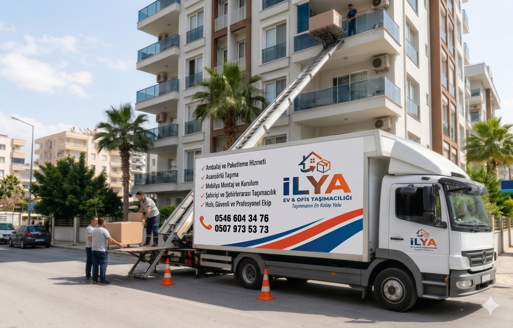

YÜKSEK KAT ÇÖZÜMÜ
Asansörlü Taşıma
Yüksek katlı binalarda eşyalarınızı dar merdiven ve bina içi risklerden uzak, dış cephe asansör sistemiyle hızlı ve kontrollü şekilde taşıyoruz.
Ücretsiz Teklif Al
Asansörlü Nakliyat Avantajları
Bina önü uygunluğu, balkon veya pencere erişimi ve araç konumu kontrol edilerek asansör kurulumu planlanır. Bu yöntem özellikle yüksek katlarda taşıma süresini kısaltır.
Eşyaların bina içinde sürtünme ve çarpma riskini azaltarak daha kontrollü bir taşıma akışı sağlar.
Hızlı taşıma
Kontrollü iniş çıkış
Yüksek kat uyumu
Zaman tasarrufu
Nasıl İlerliyoruz?
1
Kontrol
Bina ve cephe uygunluğu taşıma öncesinde değerlendirilir.
2
Kurulum
Asansör sistemi güvenli konumda hazırlanır.
3
Yükleme
Eşyalar korumalı şekilde platforma alınır.
4
Tamamlama
Yeni adreste aynı planla indirme ve yerleşim yapılır.
Binanız asansörlü taşımaya uygun mu?
Adres bilgilerinizi paylaşın; cephe ve kat durumuna göre hızlıca dönüş yapalım.
Teklif Almak İstiyorum